![[*]](crossref.png) ) of the transient
simulation. That is why an interpolation of exact values (voltage or
current) at a given point in time is necessary.
) of the transient
simulation. That is why an interpolation of exact values (voltage or
current) at a given point in time is necessary.
The time-domain simulation of components defined in the frequency-domain can be performed using an inverse Fourier transformation of the Y-parameters of the component (giving the impulse response) and an adjacent convolution with the prior node voltages (or branch currents) of the component.
This requires a memory of the node voltages and branch currents for
each component defined in the frequency-domain. During a transient
simulation the time steps are not equidistant and the maximum required
memory length 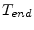 of a component may not correspond with the
time grid produced by the time step control (see section
6.2.3 on page ) of the transient
simulation. That is why an interpolation of exact values (voltage or
current) at a given point in time is necessary.
Components defined in the frequency-domain can be divided into two major classes.
Components with constant delay times are a special case. The impulse response corresponds to the node voltages and/or branch currents at some prior point in time optionally multiplied with a constant loss factor.
With no constant delay time the MNA matrix entries of a voltage
controlled current source is determined by the following equations
according to the node numbering in fig. 9.8 on page
.
The equations yield the following MNA entries during the transient analysis.
| 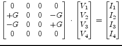 | (6.109) |
With a constant delay time 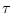 eq. (6.108) rewrites as
which yields the following MNA entries during the transient analysis.
| 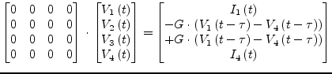 | (6.111) |
The MNA matrix entries of a voltage controlled voltage source are
determined by the following characteristic equation according to the
node numbering in fig. 9.10 on page .
This equation yields the following augmented MNA matrix entries with a single extra branch equation.
| 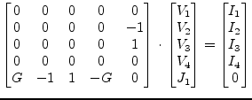 | (6.113) |
When considering an additional constant time delay eq. (6.112) must be rewritten as
This representation requires a change of the MNA matrix entries which now yield the following matrix equation.
| 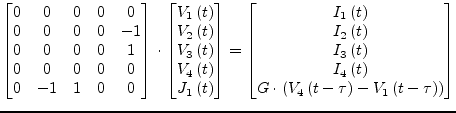 | (6.115) |
With no time delay the MNA matrix entries of a current controlled
current source are determined by the following equations according to
the node numbering in fig. 9.9 on page .
| 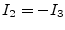 | 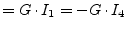 | (6.116) |
| 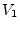 | 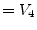 | (6.117) |
These equations yield the following MNA matrix entries using a single extra branch equation.
| 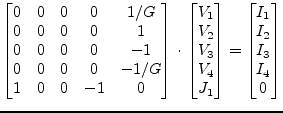 | (6.118) |
When additional considering a constant delay time eq. (6.116) must be rewritten as
Thus the MNA matrix entries change as well yielding
| 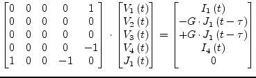 | (6.120) |
The MNA matrix entries for a current controlled voltage source are
determined by the following characteristic equations according to the
node numbering in fig. 9.11 on page .
| 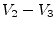 | 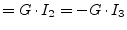 | (6.121) |
| (6.122) |
These equations yield the following MNA matrix entries.
| 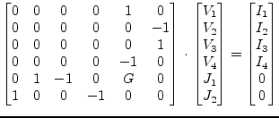 | (6.123) |
With an additional time delay between the input current and the output voltage eq. (6.121) rewrites as
Due to the additional time delay the MNA matrix entries must be rewritten as follows
| 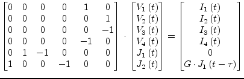 | (6.125) |
The A-parameters of a transmission line (see eq (9.196) on
page ) are defined in the frequency domain. The
equation system formed by these parameters write as
| 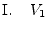 | 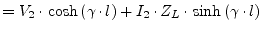 | (6.126) |
| 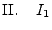 | 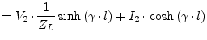 | (6.127) |
Applying 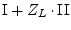 and 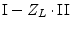 to the above equation system and using the following transformations
| 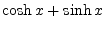 | 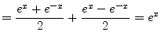 | (6.128) |
| 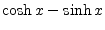 | 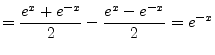 | (6.129) |
yields
whereas 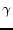 denotes the propagation constant
 ,
,
 the length of the transmission line and
the length of the transmission line and  the line impedance.
the line impedance.
These equations can be transformed from the frequency domain into the time domain using the inverse Fourier transformation. The frequency independent loss 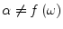 gives the constant factor
| 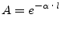 | (6.132) |
The only remaining frequency dependent term is
| (6.133) |
which yields the following transformation
| 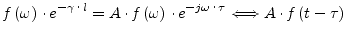 | (6.134) |
All the presented time-domain models with a frequency-independent delay time are based on this simple transformation. It can be applied since the phase velocity 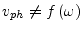 is not a function of the frequency. This is true for all non-dispersive transmission media, e.g. air or vacuum. The given transformation can now be applied to the eq. (6.130) and eq. (6.131) defined in the frequency-domain to obtain equations in the time-domain.
The length of the memory needed by the ideal transmission line can be easily computed by
 |
(6.135) |
The MNA matrix for a lossy (or lossless with 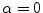) transmission line during the transient analysis is augmented by two new rows and columns in order to consider the following branch equations.
Thus the MNA matrix entries can be written as
| 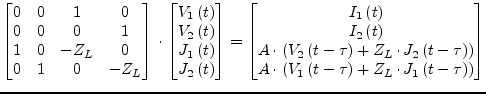 | (6.138) |
with  denoting the loss factor derived from the constant (and
frequency independent) line attenuation
denoting the loss factor derived from the constant (and
frequency independent) line attenuation  and the transmission
line length
and the transmission
line length  .
.
| 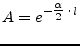 | (6.139) |
The ideal 4-terminal transmission line is a two-port as well. It differs from the 2-terminal line as shown in fig. 6.5.1 in two new node voltages and branch currents.
The differential mode of the ideal 4-terminal transmission line can be modeled by modifying the branch eqs. (6.136) and (6.137) of the 2-terminal line which yields
| 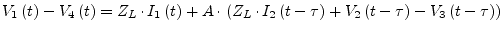 | (6.140) |
| 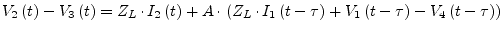 | (6.141) |
Two more conventions must be indroduced
| 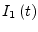 | 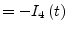 | (6.142) |
| (6.143) |
which is valid for the differential mode (i.e. the odd mode) of the transmission line and represents a kind of current mirror on each transmission line port.
According to these consideration the MNA matrix entries during transient analysis are
| (6.144) |
The analogue models of logical (digital) components explained in
section 10.6 on page do not include
delay times. With a constant delay time the determining
equations for the logical components yield
| (6.145) |
With the prior node voltages known the MNA matrix entries in eq. (10.268) can be rewritten as
| (6.146) |
during the transient analysis. The components now appear to be simple linear components. The derivatives are not anymore necessary for the Newton-Raphson iterations. This happens to be because the output voltage does not depend directly on the input voltage(s) at exactly the same time point.
In the general case a component with ports which is defined in the frequency-domain can be represented by the following matrix equation.
| (6.147) |
This matrix representation is the MNA representation during the AC analysis. With no specific time-domain model at hand the equation
| (6.148) |
must be transformed into the time-domain using a Fourier transformation.
The multiplication in the frequency-domain is equivalent to a convolution in the time-domain after the transformation. It yields the following matrix equation
| (6.149) |
whereas is the impulse response based on the frequency-domain model and the operator denotes the convolution integral
| (6.150) |
The lower bound of the given integral is set to zero since both the impulse response as well as the node voltages are meant to deliver no contribution to the integral. Otherwise the circuit appears to be unphysical. The upper limit should be bound to a maximum impulse response time
with
| (6.152) |
Since there is no analytic represention for the impulse response as well as for the node voltages eq. (6.151) must be rewritten to
with
| (6.154) |
whereas  denotes the number of samples to be used during numerical
convolution. Using the current time step
it is
possible to express eq. (6.153) as
denotes the number of samples to be used during numerical
convolution. Using the current time step
it is
possible to express eq. (6.153) as
| (6.155) |
With
 the resulting MNA matrix equation during
the transient analysis gets
the resulting MNA matrix equation during
the transient analysis gets
| (6.156) |
This means, the component defined in the frequency-domain can be
expressed with an equivalent DC admittance  and additional
independent current sources in the time-domain. Each independent
current source at node
and additional
independent current sources in the time-domain. Each independent
current source at node  delivers the following current
delivers the following current
| (6.157) |
whereas denotes the node voltage at node  at some prior time
and the impulse response of the component based on the
frequency-domain representation. The MNA matrix equation during
transient analysis can thus be written as
at some prior time
and the impulse response of the component based on the
frequency-domain representation. The MNA matrix equation during
transient analysis can thus be written as
| (6.158) |
With the number of samples  being a power of two it is possible to
use the Inverse Fast Fourier Transformation (IFFT). The
transformation to be performed is
being a power of two it is possible to
use the Inverse Fast Fourier Transformation (IFFT). The
transformation to be performed is
| (6.159) |
The maximum impulse response time of the component is specified by requiring the following transformation pairs.
| (6.160) |
with
| (6.161) | ||
| (6.162) |
The frequency samples in eq. (6.162) indicate that only half the values are required to obtain the appropriate impulse response. This is because the impulse response is real valued and that is why
| (6.163) |
The maximum frequency considered is determined by the maximum impulse
response time and the number of time samples  .
.
| (6.164) |
It could prove useful to weight the Y-parameter samples in the frequency-domain by multiplying them with an appropriate windowing function (e.g. Kaiser-Bessel).
For the method presented the Y-parameters of a component must be
finite for
as well as for
. To
obtain
 the Y-parameters at are required.
This cannot be ensured for the general case (e.g. for an ideal
inductor).
the Y-parameters at are required.
This cannot be ensured for the general case (e.g. for an ideal
inductor).